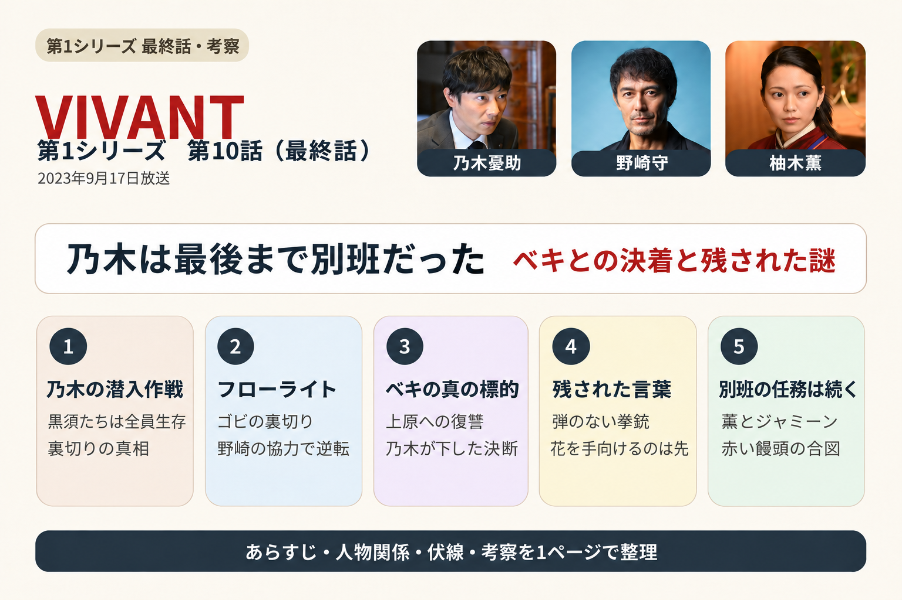
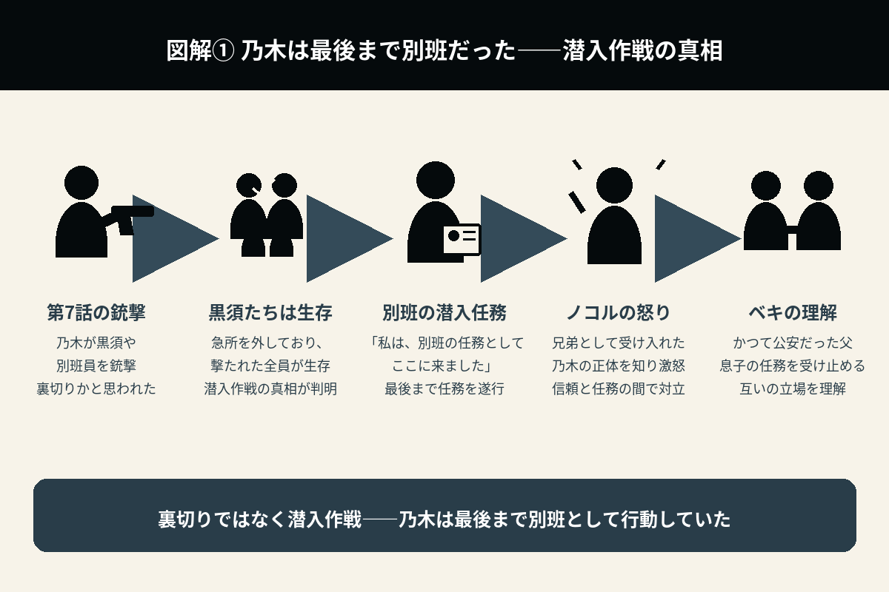
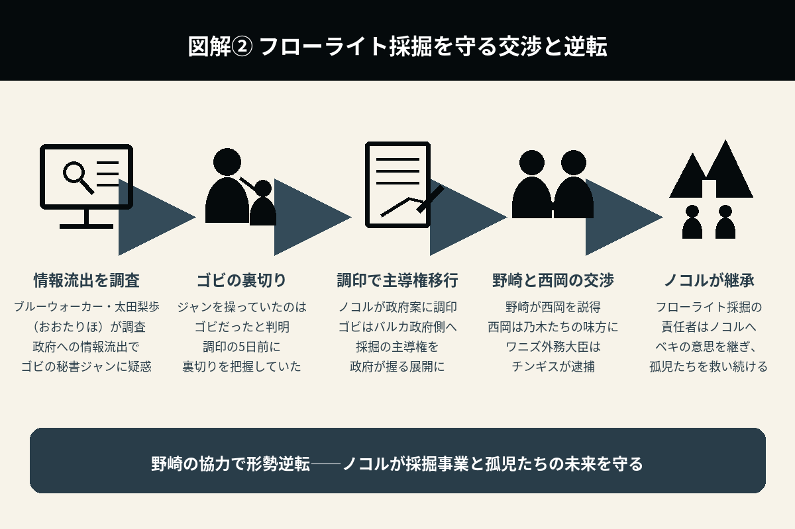
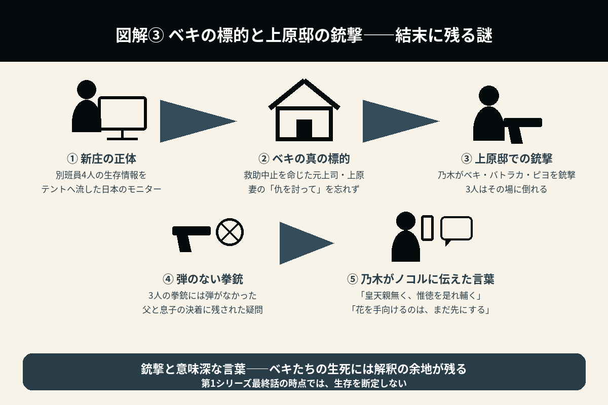

乃木は最後まで別班だった
ベキとの決着と、赤い饅頭が告げる新たな任務
第10話は、全10話で張り巡らされた伏線が回収される集大成です。単に「悪を倒して終わる」物語ではなく、親子、祖国、使命、そして正義とは何かを、最後まで問い続けた最終回でした。

1. 乃木は最後まで別班だった――銃撃に隠された潜入作戦
第9話のラストで、乃木はベキに向かって、「私は、別班の任務としてここに来ました」と告げた。
第10話は、その続きから始まる。
ここで初めて明らかになるのは、第7話で黒須や別班員を撃った場面が、裏切りではなく、潜入作戦だったという事実である。
黒須たちは急所を外して撃たれており、全員が生存していた。
乃木は、最初から最後まで別班として行動していたのである。
第7話以来、多くの視聴者が抱いていた「乃木は裏切ったのか？」という疑問が、この冒頭で一気に解決する。

2. ノコルの怒り――兄弟として受け入れ始めた相手の真実
真実を知ったノコルは、激怒する。
自分は、乃木を兄弟として受け入れ始めていた。
しかし、その乃木が別班として潜入していたことを知り、「最初から俺たちを騙していたのか」と感情を爆発させる。
ノコルにとって最もつらかったのは、組織を欺かれたことだけではない。ようやく兄と認めようとした相手が、任務を優先していたことだった。
一方、乃木も、ノコルと過ごした時間が決して嘘ではなかったことを伝えようとする。しかし、その思いは簡単には届かない。
3. ベキの決断――息子の任務を理解した父
ベキは、乃木を責めることはしなかった。
最初から見抜いており、それでも乃木を殺さなかった。
むしろ静かに、「お前は自分の任務を全うした」と受け止める。
かつて、自分も公安として生きていた。
だからこそ、任務を優先した息子の行動を理解できたのである。
この場面では、父と子が敵同士の立場にありながらも、互いの立場を誰よりも理解していることが伝わってくる。
役所広司の静かな演技が、印象的だった。
4. フローライト鉱山を守る最後の戦い――ゴビの裏切りと交渉の逆転
物語は、フローライト鉱山を巡る攻防へ進む。
乃木やノコルたちは、ワニズ外務大臣と対峙する。
そこには、大使の西岡の姿もあった。ワニズは、フローライト採掘について、ノコルにかなり歩み寄った提案をしてきた。
しかし、ブルーウォーカー・太田梨歩（おおたりほ）の調査によって、フローライトの情報を政府に流した裏切り者は、ゴビの秘書のジャンであることが判明する。
後日、ノコルはバルカ政府の提案を受け入れ、調印する。
ところが、ゴビが裏切ってバルカ政府側につき、フローライト採掘の主導権はバルカ政府が握ることになった。
そこへやって来たのが、野崎とチンギスだった。野崎は西岡に、決断を迫る。
実は、その5日前、ジャンがゴビに操られていたことが分かり、ゴビの裏切りが発覚していた。
乃木は最終手段として、野崎に協力を依頼することをベキに提案する。しかし、それはベキが捕まることを意味していた。
ベキは、最初からテロで人を殺してきた罪を償うつもりだった。そして、野崎との対面を果たす。
野崎は西岡に、バルカ政府ではなく、自分たちと手を組むよう説得する。西岡はワニズを裏切り、乃木たちの味方となった。
こうしてノコルはフローライト採掘の責任者となり、今後も孤児たちを救っていくことを宣言する。
ワニズ外務大臣は、チンギスに逮捕される。
バルカ政府内部の腐敗した勢力は、採掘権を奪うために、武装勢力を利用しようとする。
一方、ベキは「この鉱山があれば孤児たちを守れる」という信念のもと、最後の戦いに挑む。
乃木も黒須も、そして別班も、それぞれの立場で事態の収拾に動く。
ここは、最終回最大の攻防となった。

5. 野崎の協力――「スネイプ社」に託された潜入作戦の合図
野崎は、公安として現地に入り、最後まで状況を見届ける。
乃木の作戦を知っていたのは、櫻井だけだった。そして乃木は、もう1人の協力者が野崎であることを明かす。
野崎は、乃木の「スネイプ社」などの言葉から潜入作戦を悟り、協力者となっていた。
こうしてベキは、乃木と黒須と共に、フローライト採掘と裏切り者探しを進めていくことになる。
野崎は、「正義と悪だけでは割り切れない」という複雑な思いを抱く。
公安としての立場を守りながらも、1人の人間としてベキを理解し始める場面でもあった。
ベキ、バトラカ、ピヨは捕まり、野崎によって日本へ護送される。
6. 親子、最後の時間――「息子に会えた」という思い
事件が終わると、ベキは静かに乃木へ語り掛ける。
自分が日本を恨んでいたこと。
それでも、乃木だけは生きていてくれたこと。
そして、「息子に会えた」。それだけで十分だったこと。
乃木も初めて、ベキを父として真正面から受け止め、短いながらも親子としての時間を過ごす。
派手な演出はない。
しかし、この静かな会話こそが、『VIVANT』最大の見せ場だった。
7. ベキの最期――上原への復讐と、乃木が残した言葉
ベキたちは、日本で逃亡を図る。
別班員4人の生存情報をテントに流していた、日本のモニターは新庄だった。
ベキが忘れられなかったのは、日本への恨みというよりも、当時、自分を裏切った相手への思いだった。そして、妻から託された「仇を討って」という言葉だった。
乃木は、帰国を急ぐ。
ベキは、当時の上司で、現在は内閣官房副長官を務める上原と、その家族を監禁する。
上原は、バルカでベキの救助中止を言い渡した張本人だった。
ベキは上原に発砲するが、その直前、乃木がベキ、バトラカ、ピヨを銃撃する。
ベキ、バトラカ、ピヨは倒れる。
3人の拳銃には、弾が入っていなかった。
物語の中でも、最も悲しい場面だった。
「皇天親無く、惟徳を是れ輔く」に込められた意味
『VIVANT』第10話の終盤で、乃木は、
「皇天親無く、惟徳を是れ輔く」
（こうてんしんなく、ただとくをこれたすく）
と言った後、
「花を手向けるのは、まだ先にする」
と続ける。
この2つの言葉を合わせると、次のように解釈できる。
「天は公平で、徳ある者を助ける」
「だから、私はまだ死んだと決めつけない」
「真実が明らかになるまで、弔うことはしない」
そうした乃木の信念を表しているように受け取れる。
つまり、この2つの台詞は独立したものではなく、
「天は正しい者を見捨てない。だから、私はまだ仲間を弔わない。生死の真実を確かめ、やるべきことを果たすまでは」
という、一連のメッセージとして読むことができる。
ただし、これは台詞から読み取れる解釈であり、第1シーズンの最終話だけで、3人の生死が明確に説明されたわけではない。
『VIVANT』では、このように古典の言葉を乃木の信条や行動原理と重ねる演出が見られる。第10話の終盤は、その代表的な場面である。

8. エピローグ――赤い饅頭が告げる別班の招集
事件は終結し、乃木は神田明神へ向かう。
そこで薫とジャミーンに再会し、抱き合う。
しかし、Fが現れ、「置いてあるぞ」と告げる。乃木は、祠に置かれた赤い饅頭を発見した。
それは、「別班、招集」を意味する合図だった。
乃木は、静かに立ち上がる。
物語は終わった。
しかし、別班の任務は終わっていない。
そう感じさせる余韻を残し、幕を閉じた。
第10話で新たに分かったこと
| 乃木 | 最後まで別班として、潜入任務を遂行していた。 |
|---|---|
| 黒須たち | 第7話で撃たれたが、急所は外されており、全員が生存していた。 |
| ベキ | 息子の任務を理解したうえで、自らの運命を受け入れた。 |
| ノコル | ベキの意思を継ぐ覚悟を固め、孤児たちを救い続けることを宣言した。 |
| ゴビとジャン | ジャンの背後でゴビが動いていたことが分かり、フローライトの情報流出を巡る裏切りの構図が明らかになった。 |
| フローライト採掘 | 野崎と西岡の交渉によって形勢が逆転し、ノコルが採掘の責任者となった。 |
| 野崎 | 乃木の言葉から潜入作戦を悟って協力していた。テントの真実に触れ、「正義とは何か」を考えさせられる立場にもなった。 |
| 新庄 | 別班員4人の生存情報をテントに流していた、日本のモニターだった。 |
| ベキの標的と銃撃後の謎 | 標的は、救助中止を言い渡した上原だった。乃木に撃たれた3人の拳銃には弾がなく、その後の乃木の言葉が生死を巡る謎を残した。 |
| ラスト | 赤い饅頭が置かれ、新たな別班任務への招集が示唆された。 |
第10話の見どころ
最終話は、アクションの決着だけでなく、「親子の物語」として完成した回だった。
特に印象的なのは、乃木とベキが、最後まで互いの立場を否定しなかったことである。
乃木は「別班としての任務」を曲げず、ベキも「父として息子の使命」を尊重した。そのため、2人の対立は、単純な善悪ではなく、それぞれが信じる道を貫いた結果として描かれている。
また、第7話で「乃木は裏切ったのか」と視聴者を驚かせた場面が、最終話で回収される構成も見事だった。
乃木が黒須たちを撃った行為は、仲間への裏切りではなく、テントへ入り込むための潜入作戦だった。急所を外して全員を生かしていたという真相によって、それまでの場面の意味が変わる。
フローライトを巡る攻防も、単なる資源の奪い合いでは終わらない。ベキやノコルにとって、それは孤児たちの暮らしを守るための事業だった。ゴビの裏切り、野崎の協力、西岡の決断が重なり、ノコルが意思を継ぐ形で決着する。
一方、テントが孤児たちを救ってきたことと、テロによって人を殺してきたことは、切り離して考える必要がある。ベキを理解できる部分があっても、その罪が消えるわけではない。その複雑さが、物語に重みを与えていた。
上原邸で乃木がベキ、バトラカ、ピヨを撃つ場面は、息子としての思いと、別班としての使命が正面からぶつかる、悲しい場面だった。
しかし、3人の拳銃に弾が入っていなかったことや、乃木がノコルに伝えた「皇天親無く、惟徳を是れ輔く」「花を手向けるのは、まだ先にする」という言葉によって、結末には解釈の余地が残される。
そして、ラストに置かれた赤い饅頭は、「物語は終わっても、別班の任務は続く」という強いメッセージとなった。
薫とジャミーンとの再会によって、ようやく日常へ戻れたかに見える乃木に、再び任務の合図が届く。この終わり方が、その後の続編へとつながる余韻を残している。
次の物語では、新たな任務だけでなく、乃木が別班として生きることと、大切な人たちとの暮らしを、どのように両立していくのかにも注目したい。